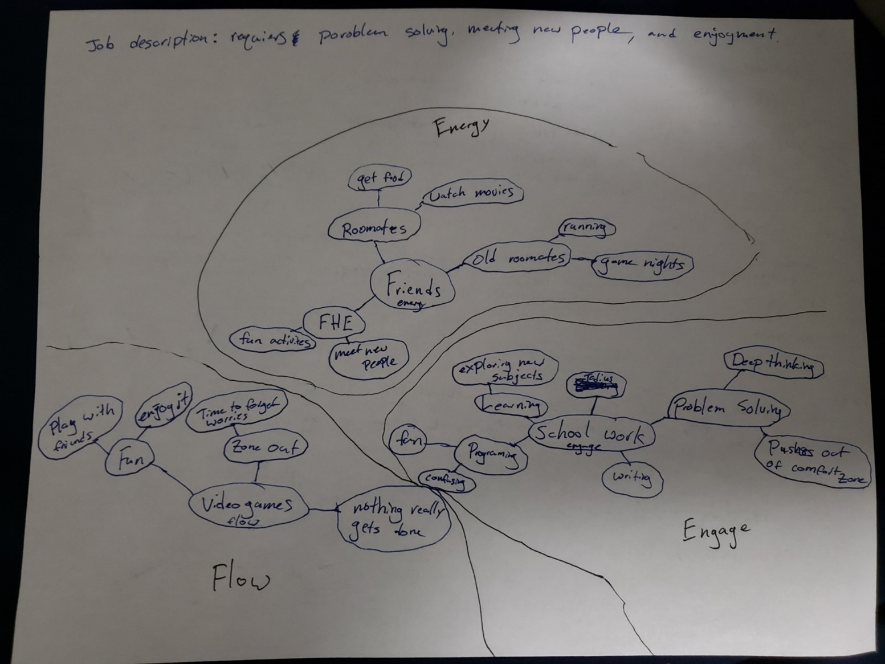

Chapter 2 of the User Manual
Health: Pretty good. Lots of good food, exercise, and time to recover currently. Spiritually doing alright with church and calling. Defiantly need to do a little more with the calling and hae a little more consisten work out but still doing it. ¾ way full.
Work: Not currently working to go to school so maybe half good. Trying out a crypto running thing to make little bit of money. Financially good though until the semester ends and I work until next semester. ½ full.
Play: Lots of this with the FHE sisters and other girls in the ward and with roommates right now. Having fun with all the activates we do. Volleyball, pickleball, just getting together and talking and having fun. Full.
Love: Not really actively seeking it romantically but still looking. Getting a lot from friends and family and ward members. ½ full.
Work view: If I don’t work then I don’t make money to live. Work is for living. If you don’t work, then you don’t live but it’s not fun to work. Work means you are doing what you are supposed to. You must work. You work for money. The more money you make the better. By working you gain experience, and this can help you grow. There is a little bit of fulfillment because you can do something but its not everything.
Life view: We are here to gain experience and to learn how to be good people. The purpose of life is to have a family and find happiness.
Good Times Journal:
• Wake up and get ready for class.
• Ride motorcycle to class
• Come home and eat lunch
• Head to last class of the day
• Come home and do homework
• Play videogames and hang out with friends
Going to school drains me but it’s a good thing to do. Coming home and doing my own thing helps recharge my energy but the older I get the more I actually like being with people so that’s cool.
